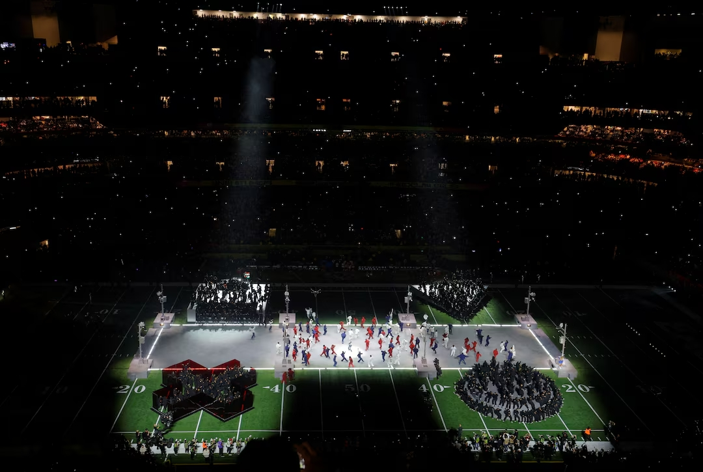
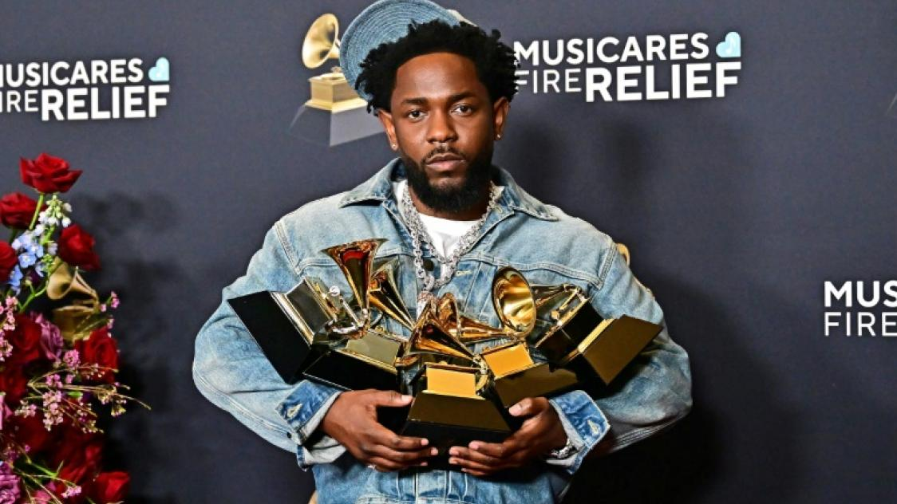

Début
Kendrick commence à rapper dans sa jeunesse à Compton, influencé par Tupac et Dr. Dre.

Succès
En 2022, Kendrick se produit au Super Bowl Halftime Show aux côtés de Dr. Dre, Snoop Dogg, Eminem, Mary J. Blige et 50 Cent. Une performance légendaire, vue par des millions de spectateurs, qui confirme son statut d’icône mondiale.

Engagement
Son album To Pimp a Butterfly aborde le racisme, la politique et l’identité noire.

Récompenses
Il reçoit plusieurs Grammy Awards et le prestigieux prix Pulitzer pour DAMN..